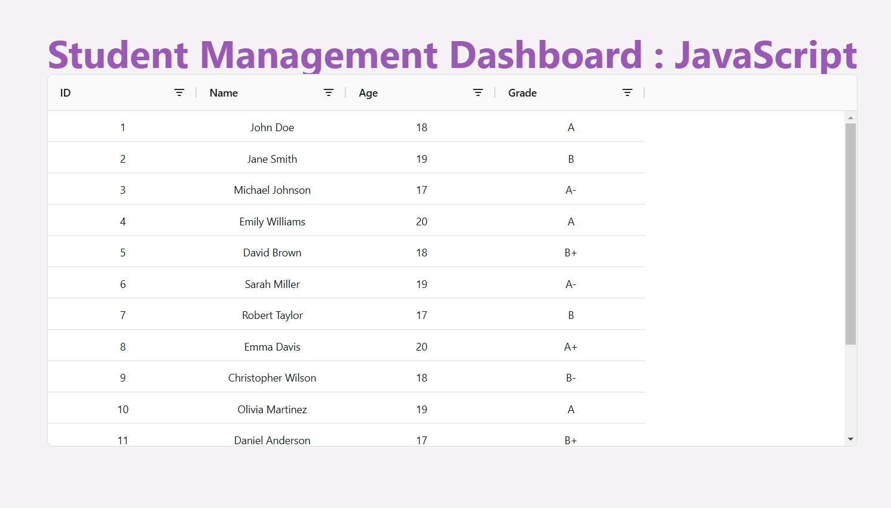
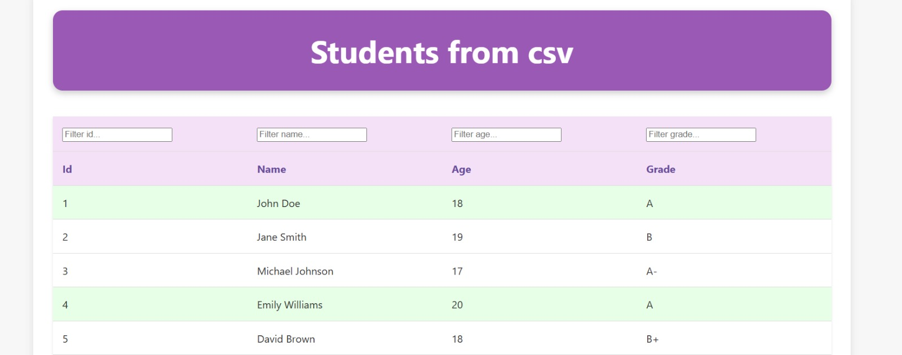

NOTES
Exercise - 3: Starting with Vite
Tasks
- level - 1: initialized a Vite project using the JavaScript template and rebuilt the student management dashboard to load student data from a JSON file and display it in a table.
- level - 2: initialized a Vite project using the TypeScript template and enhanced the student management dashboard to fetch, parse CSV data with PapaParse, and display it using AG Grid, while modularizing the code for data loading, parsing, and rendering.
First time using vite with typescript. I have used vite with libraries such as react, but this was my first time performing such kind of task
- level - 3: created a CSS file with margin utility classes and replicated the same functionality in SCSS using loops, leveraging Vite's native support for SCSS.
Assignment Screenshots

